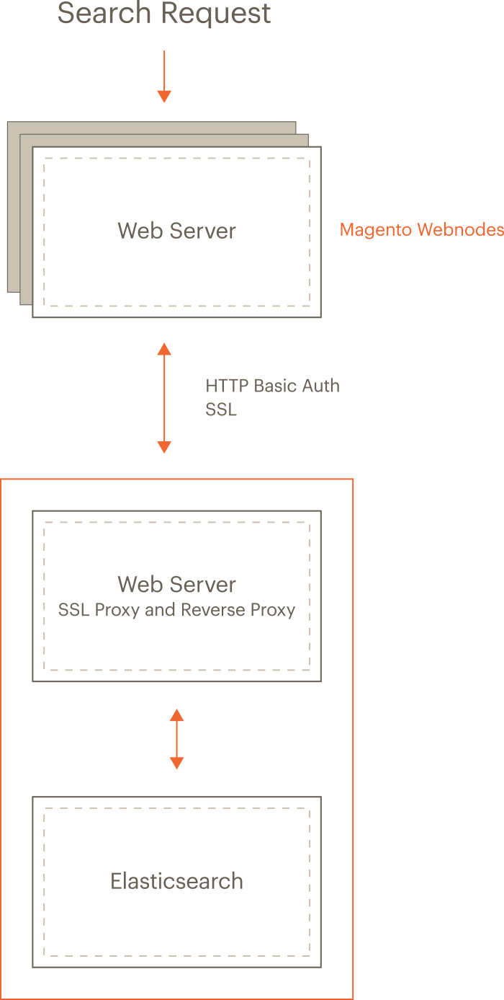

Install and configure Elasticsearch
- Configure nginx and Elasticsearch
- Configure Apache and Elasticsearch
- Configure Elasticsearch stopwords
Elasticsearch overview
In Magento 2.2, you can use Elasticsearch for searching your catalog.
- Elasticsearch performs quick and advanced searches on products in the catalog
- Elasticsearch Analyzers support multiple languages
- Supports stop words and synonyms
-
Indexing does not impact customers until reindex is completed
Elasticsearch returns search results based on the last generated index until the new one has been completely indexed so there’s no disruption to customers
- Accurate, performant, scalable
- Works well out of the box
- Easy to horizontally scale
- Supports real-time data and analysis
- Can be used as a document-oriented data store
- Applications in framework beyond search—reporting, personalization, performance, and storage
Supported versions
Magento 2.2.8 adds support for Elasticsearch 6.x, and it is enabled by default. Magento still provides modules for Elasticsearch 2.x and 5.x, but these must be enabled in order to use these versions. Elasticsearch 2.x is still supported, but strongly discouraged. If you must run Elasticsearch 2.x or 5.x with Magento 2.3.1, you must change the Elasticsearch php client. Follow the instructions in Downgrade Elasticsearch Client.
Magento Commerce version 2.2.x supports the following Elasticsearch versions:
- Elasticsearch 6.6.x
Magento 2.2.8 uses Elasticsearch PHP client version 6. (Before version 2.2.3, Magento used PHP client version 5.1.)
Recommended configuration
The following figure shows our recommended configuration. All of the tasks we discuss assume you have configured your system this way.

The preceding diagram shows:
-
The Magento application and Elasticsearch are installed on different hosts.
Running on separate hosts is secure, enables Elasticsearch to be scaled, and is necessary for proxying to work. Clustering Elasticsearch is beyond the scope of this guide but you can find more information in the Elasticsearch documentation.
-
Each host has its own web server; the web servers don’t have to be the same.
For example, the Magento application can run Apache and Elasticsearch can run nginx.
-
Both web servers use Transport Layer Security (TLS).
Setting up TLS is beyond the scope of our documentation.
Search requests are processed as follows:
-
A search request from a user is received by the Magento web server, which forwards it to the Elasticsearch server.
You configure Elasticsearch in the Magento Admin to connect to the proxy’s host and port. We recommend the web server’s SSL port (by default, 443).
- The Elasticsearch web server (listening on port 443) proxies the request to the Elasticsearch server (by default, it listens on port 9200).
-
Access to Elasticsearch is further protected by HTTP Basic authentication.
For any request to reach Elasticsearch, it must travel over SSL and provide a valid username and password.
- Elasticsearch processes the search request.
- Communication returns along the same route, with the Elasticsearch web server acting as a secure reverse proxy.
Install prerequisites and Elasticsearch
The tasks discussed in this section require the following:
- Firewall and SELinux
- Install the Java Software Development Kit (JDK)
- Install Elasticsearch 6
- Upgrade from Elasticsearch 2.x/5.x to 6.x
- Configure Magento to use Elasticsearch
Firewall and SELinux
Please take into account that security-related software (iptables, SELinux, AppArmor etc.) may be configured by default to block communication between subsystems. It may be a good idea to check them in case of problems.
Set up rules for iptables and SELinux
To set up rules to allow communication with the firewall or SELinux enabled, consult the following resources:
- iptables how-to
- How to edit iptables rules (fedora project)
- Introduction to SELinux (CentOS.org)
- SELinux How-To Wiki (CentOS.org)
Install the Java Software Development Kit (JDK)
To determine if Java is already installed, enter the following command:
1
java -version
If the message java: command not found displays, you must install the Java SDK as discussed in the next section.
See one of the following sections:
Install the JDK on CentOS
See this article on digitalocean.
Be sure to install the JDK and not the JRE.
1
yum -y install java-1.8.0-openjdk
Java version 8 might not be available for all operating systems. For example, you can search the list of available packages for Ubuntu.
Install the JDK on Ubuntu
To install JDK 1.8 on Ubuntu, enter the following commands as a user with root privileges:
1
add-apt-repository -y ppa:webupd8team/java
1
apt-get -y update
1
apt-get install -y oracle-java8-installer
For other options, see Oracle documentation.
Install Elasticsearch 6.x
- Log in to your Magento server as a user with
rootprivileges. -
CentOS: Install Elasticsearch 6.x using the [Elasticsearch RPM documentation][]
-
Ubuntu: Install Elasticsearch 6.x using the [Elasticsearch Ubuntu documentation][]
-
Optionally, configure Elasticsearch as needed. See [Configuring Elasticsearch][] for more information.
-
If not already running, start Elasticsearch:
1
sudo service elasticsearch start -
Verify that Elasticsearch is working by entering the following command on the server on which it is running:
1
curl -XGET '<host>:9200/_cat/health?v&pretty'
A message similar to the following is displayed:
1 2
epoch timestamp cluster status node.total node.data shards pri relo init unassign pending_tasks 1519701563 03:19:23 elasticsearch green 1 1 0 0 0 0 0 0
Upgrading Elasticsearch
Refer to Upgrading Elasticsearch for full instructions on backing up your data, detecting potential migration issues, and testing upgrades before deploying to production.
Upgrading from 2.x to 6.x requires a full cluster restart. See Full cluster restart upgrade for details.
Elasticsearch 6.x requires JDK 1.8 or higher. Elasticsearch 2.x requires JDK 1.7 or higher. See Install the Java Software Development Kit (JDK) to check which version of JDK is installed.
Additional resources
For additional information, see Elasticsearch documentation
Next step